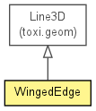

toxi.geom.mesh
Class WingedEdge
java.lang.Object
 toxi.geom.Line3D
toxi.geom.mesh.WingedEdge
toxi.geom.Line3D
toxi.geom.mesh.WingedEdge
public class WingedEdge
- extends Line3D

| Fields inherited from class toxi.geom.Line3D |
a, b |
| Methods inherited from class toxi.geom.Line3D |
closestLineTo, closestPointTo, copy, equals, getDirection, getLength, getLengthSquared, getMidPoint, getNormal, hasEndPoint, hashCode, offsetAndGrowBy, set, set, splitIntoSegments, splitIntoSegments, toRay3D |
| Methods inherited from class java.lang.Object |
getClass, notify, notifyAll, wait, wait, wait |
faces
public java.util.List<WEFace> faces
id
public final int id
WingedEdge
public WingedEdge(WEVertex a,
WEVertex b,
WEFace f,
int id)
addFace
public WingedEdge addFace(WEFace f)
getFaces
public java.util.List<WEFace> getFaces()
- Returns:
- the faces
getOtherEndFor
public WEVertex getOtherEndFor(WEVertex v)
remove
public void remove()
toString
public java.lang.String toString()
- Overrides:
toString in class Line3D